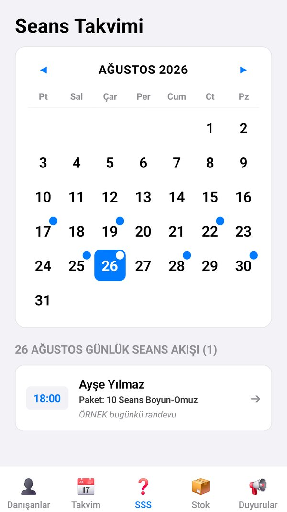

Meridyen Terapi Asistanı
iOS · Android
Live in Turkey
Expo / React Native · TypeScript · Supabase · RevenueCat
A mobile CRM for meridian therapists: clients, session packages, appointments, an FAQ knowledge base, product stock and announcements. Subscription-based, on the App Store and Google Play in Turkey.
Every therapist sees only their own client data. This is enforced by row-level security in the database, not just by the app.
